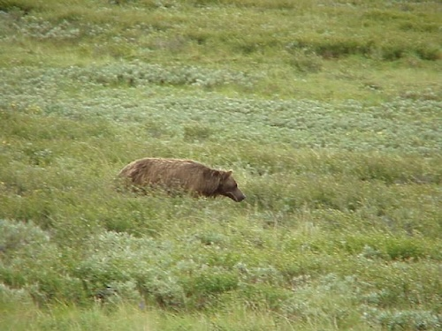
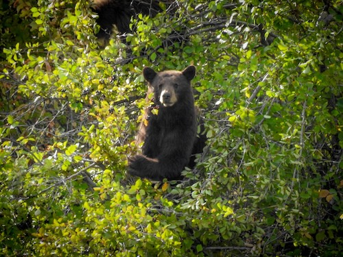
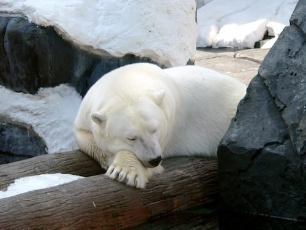

Bears generally live in forests, mountains, and tundra. They are omnivorous mammals that can be found in North America, South America, Europe, and Asia. Bears are known for their large size, thick fur, and strong build. They have a keen sense of smell and are excellent climbers and swimmers.



Polar bears are known to be primarily carnivorous, feeding mainly on seals, while Grizzly bears and Black bears have a more omnivorous diet, consuming a variety of plants, fruits, insects, and small mammals. Grizzly bears are typically larger and more aggressive than Black bears, which are generally smaller and more timid. Polar bears are adapted to cold Arctic environments, while Grizzly and Black bears can be found in a range of habitats including forests and mountains.
| Bear Type | Avg Size | Habitat |
|---|---|---|
| Grizzly Bear | 400-700 lbs | Forests, Mountains |
| Black Bear | 130-600 lbs | Forests |
| Polar Bear | 700-1,500 lbs | Arctic Regions |